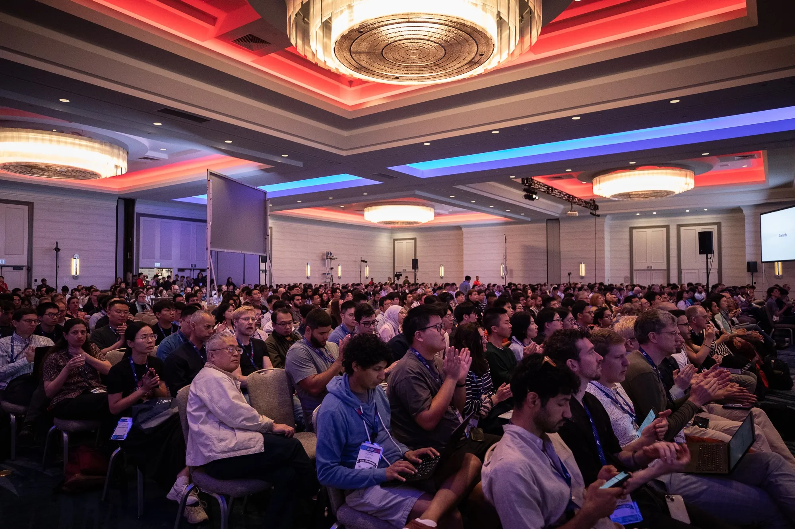
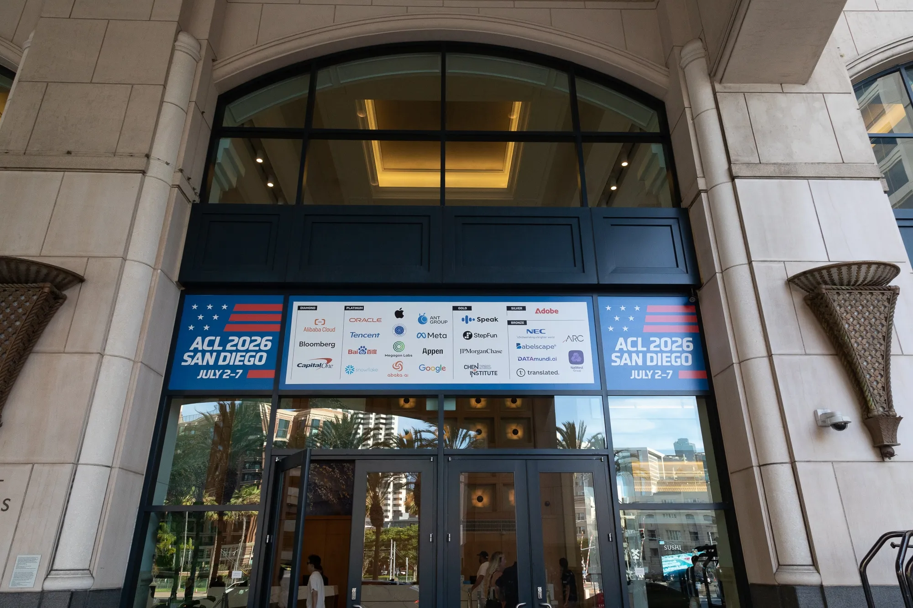
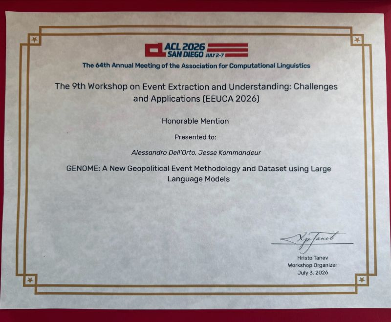

ACL 2026
GENOME: A new Geopolitical Event Methodology and Dataset using Large Language Models is a study on the use of LLMs to extract cooperative and conflictual events from newswire sources and part of my internship project at The Hague Centre for Strategic Studies (HCSS). Presented at the Association for Computational Linguistics (ACL) annual conference, it received an Honourable Mention at its workshop.